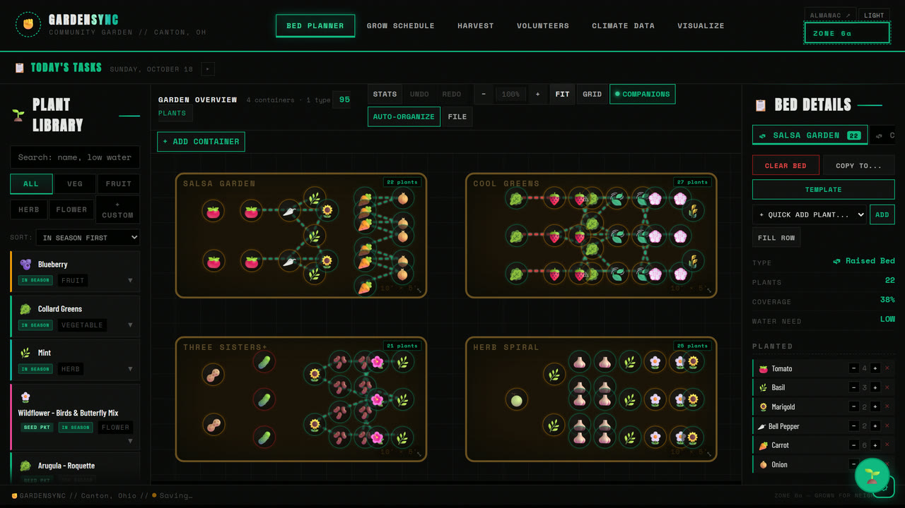
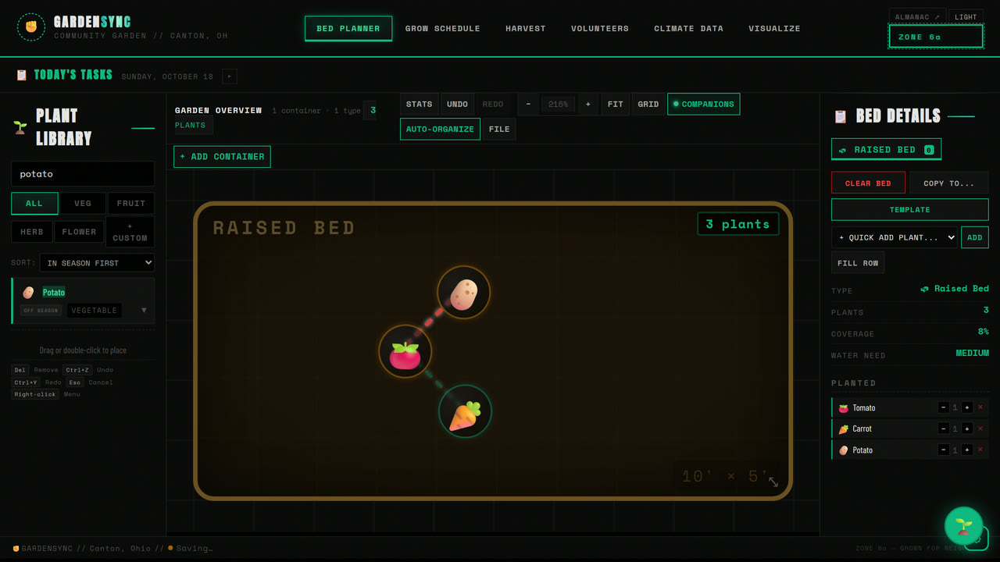
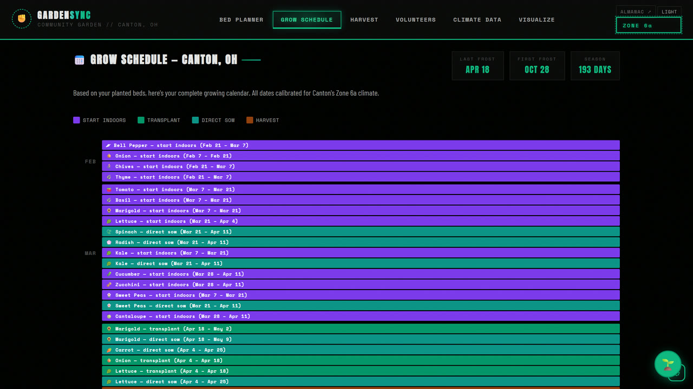
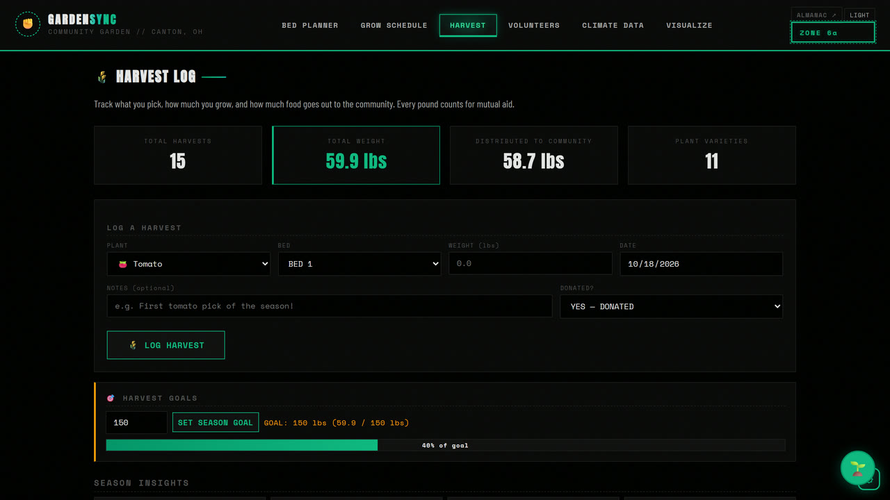
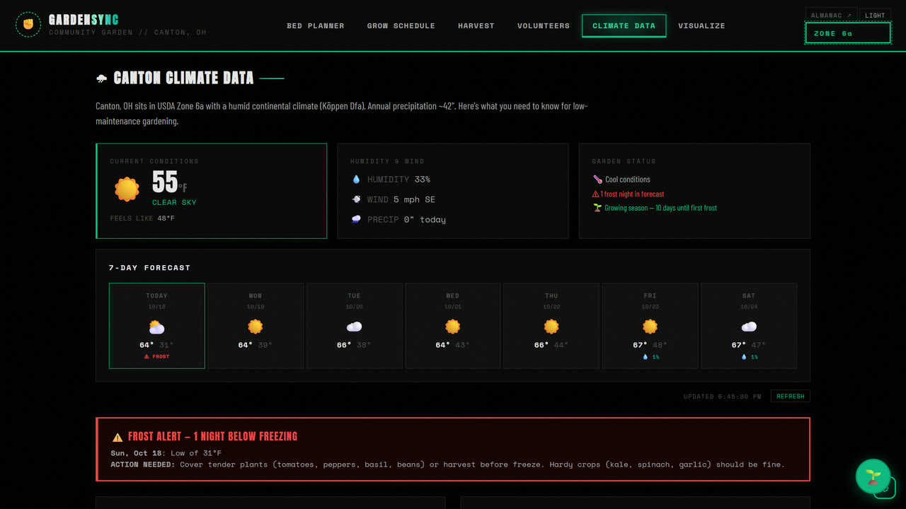

No build step
The app is plain HTML, CSS and JavaScript: 33 modules loaded by script tags in a fixed order, talking through one shared state object. No bundler, no framework. Deploying is a script that copies files to Cloudflare Pages.
v1.0: finished and in use
Plan your garden by drag and drop, then let it tell you the right time to plant, tend and harvest.
Free, no account. It runs in your browser and keeps your garden there. Built around Canton, Ohio (USDA Zone 6a).
01 // THE BEDS
Pick a seed from the library and drop it on a bed. It snaps to a 20 pixel grid with its real footprint reserved: sixteen carrots to a square foot, one tomato to a two by two. Beds, pots, grow bags, window boxes and potato towers all work the same way.
Pan, zoom, multi-select, drag, undo and redo. Seven ready-made bed layouts, from a salsa garden to a three sisters bed, drop a whole planting in at once.
02 // FRIENDS AND FOES
Companion planting is drawn, not buried in a tooltip. Friendly neighbours are joined by teal threads and a conflict is a red one, flagged the moment you place it, not after the season is lost.
Here a carrot lands next to a tomato and gets a teal thread. A potato lands on the other side and gets a red one, and the bed reports one foe. Undo takes it back out.
03 // THE CALENDAR
Every plant you place gets its own dates: start indoors, transplant, direct sow, first harvest. They are measured from Canton's last frost on April 18 and first frost on October 28, so the calendar is honest about being local.
Below the timeline is a task tracker you can tick off, and it is saved with the garden. Along the top of the planner, Today's Tasks shows what wants sowing, transplanting or picking this week.
Log each pick with plant, bed, weight and date, and track how much went out to the community.
A crew list with availability, bed assignments and weekly tasks, built for spotty attendance.
Live Canton conditions and a 7-day frost watch from Open-Meteo, plus rainfall and temperature charts.
An optional Claude assistant that can place plants and answer timing questions. It uses a key you paste in yourself.





BUILD NOTES
GardenSync started on 2026-02-16 as a bed planner for a community garden whose volunteers change week to week. The plant data and the schedule maths are the parts that matter most, because the harvest feeds neighbours. Most of the code was written with Claude Code, with a CLAUDE.md in the repo that records the architecture and its gotchas.
The app is plain HTML, CSS and JavaScript: 33 modules loaded by script tags in a fixed order, talking through one shared state object. No bundler, no framework. Deploying is a script that copies files to Cloudflare Pages.
Every bed is a div and every plant is a div inside a panned and zoomed canvas element. Companion threads are an SVG overlay. Real canvas drawing is used in only three places: the climate charts, the PNG export and seed-packet photo prep.
Every edit to the garden goes through pushUndo() first, which is what makes undo and redo dependable rather than approximate.
The garden autosaves to your browser and travels as a JSON file or a link. Cloud backup is optional and off by default. Your garden is not sent anywhere unless you ask it to be.
The clips and stills on this page were recorded by a Playwright script against the live app, using the built-in demo gardens and an empty bed, never a real garden.
A Quiet Almanac is the same plants and the same frost dates rebuilt as warm paper and ink. It shares no code with this one.